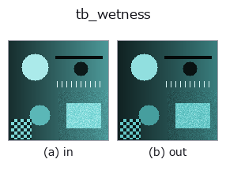

typed op• Data kinds: rgbimage → rgbimage
• Call: fullseye.apply(img, "tb_wetness", a=0.5, b=0.5) (2-D model = एक image + दो scalar knobs a,b∈[0,1])

*Figure synthetic 128×128 input पर सच में चलाकर मिला output है। बाईं ओर input, दाईं ओर output। Point clouds ऊपर से देखे गए scatter के रूप में (brightness = z), 1-D series line के रूप में, volumes z दिशा में maximum-intensity projection के रूप में, videos बीच के frame के रूप में, complex images amplitude के रूप में, और जो return values चित्र नहीं बन सकते वे स्वयं values के रूप में दिखाए जाते हैं।*
Knob a को बदलकर (0.1 / 0.5 / 0.9, दूसरा knob default पर):
▸ tb_wetness: knob a को बदलने का figure (docs site)
Knob b को बदलकर (0.1 / 0.5 / 0.9, दूसरा knob default पर):
▸ tb_wetness: knob b को बदलने का figure (docs site)
Stages (पहले आने वाले ops → यह op, बाएँ से क्रम में):
▸ tb_wetness: stages का figure (docs site)
दूसरी images पर भी (synthetic scene / photo / coins। ऊपर की row में inputs, नीचे की row में उनके outputs। Knobs default पर):
▸ tb_wetness: दूसरी images पर output (docs site)
गीली surface का base रंग। diffuse गहरा होता है (और specular बढ़ता है)।
> नीचे का विस्तृत विवरण मूल text में है — सारांश और headings का अनुवाद हो चुका है।
base_rgb: 乾いた状態の色 (H,W,3) または (3,)。wet: 濡れ具合(0–1)。
ior: 水膜の屈折率。
返り値: 濡れた状態の拡散色(同形)。
なぜ暗くなるか: 水膜の内側で全反射が起き、拡散光が何度も表面へ戻されてそのたびに吸収される。近似として、乾いた反射率 ρ に対し内部反射率 Ri = 1 − (1 − Ri0)/n² 相当の再吸収を掛ける ―― 濡れた砂が黒く見える現象そのもの(鏡面が増えるのは clearcoat_shade(coat=wet) を重ねて表す)。
2-D 進化レジストリへ橋渡しした optics の op wetness。実装は同じで、呼び出し規約だけ op(v, a, b) に合わせてある。a が wet(既定 1)、b が ior(既定 1.33)を振る。
• Sample data catalog (DL URL / license) — 2-D के लिए skimage.data (BSD/public) + synthetic, 3-D के लिए real data sources (Stanford/PDS आदि) के DL URL।
• Operators का स्रोत और संदर्भ — इस op family के मूल research/methods के स्रोत।
नीचे का program सच में चलता है, यह जाँचा गया है (figure वाला ही input)। Studio की help में यह block buttons बन जाता है, जिनसे इसे वहीं load करके चलाया जा सकता है।
img_to_rgb 0.50 0.50 tb_wetness 0.50 0.50
▸ यह pipeline load करें · Load करके चलाएँ
नीचे के उदाहरण मूल ledger op wetness को call करते हैं। यह bridge op वही implementation है, बस fn(v, a, b) convention के अनुसार ढाला गया है, इसलिए व्यवहार वैसा ही लागू होता है (केवल call का रूप अलग है)।
• machined_metal_and_materials — py -3.11 examples/machined_metal_and_materials.py
rgbimage को input के रूप में लेते हैं)identity · tb_sensor_capture · tb_specular_diffuse_split · tb_specular_coefficient_map · tb_specular_free_transform · tb_rgb_to_quaternion
typed)tb_points_to_voxel · tb_estimate_point_normals · tb_iss_keypoints · tb_project_points · tb_render_point_depth · tb_statistical_outlier_removal · tb_radius_outlier_removal · tb_voxel_grid_downsample
*Provenance: ops.py — 2D operator registry. यह per-op note tools/opdocs.py md से अपने-आप generate होता है (हाथ से edit न करें)।*
© 2026 Kazufumi Furuse — Fullseye operator documentation. Licensed under Apache-2.0.